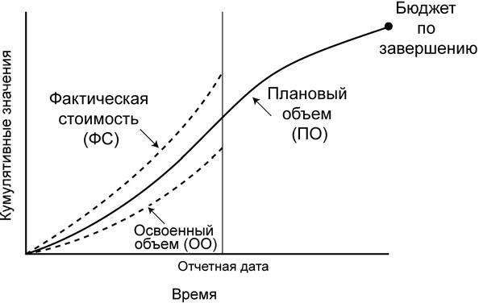
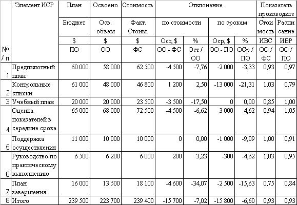

Управление стоимостью проекта (п.7.3., рис. 10.1)
Управление стоимостью проекта включает в себя:
- Воздействие на факторы, вызывающие изменения базового плана по стоимости.
- Проверка того, что запрошенные изменения получили одобрение.
- Управление фактическими изменениями по мере их возникновения.
- Обеспечение того, что потенциальное превышение стоимости не приведет к увеличению расходов сверх авторизованных пределов финансирования, как периодических, так и проекта в целом.
- Осуществление мониторинга выполнения стоимости с целью обнаружения и анализа отклонений от базового плана по стоимости.
- Точное фиксирование и ведение записей всех соответствующих изменений в затратах, имеющих отличия от базового плана по стоимости.
- Защита правил использования утвержденных ресурсов или денежных средств от того, чтобы в них не были внесены неверные, несоответствующие или неутвержденные изменения.
- Информирование соответствующих участников проекта об утвержденных изменениях.
- Выполнение действий, необходимых для того, чтобы превышения стоимости затрат оставались допустимых пределах.
Управление стоимостью проекта является частью общего управления изменениями и включает в себя поиск причин, вызывающих как позитивные, так и негативные отклонения (п. 4.6, рис.6.1). Например, неадекватное реагирование на отклонение по стоимости может привести к возникновению проблем с расписанием или качеством, или к появлению неприемлемого увеличения риска на дальнейших этапах проекта.
7.3.1 Управление стоимостью: входы
7.3.1.1 Базовый план по стоимости. см. в п. 7.2.3.1.
7.3.1.2 Требования к финансированию проекта п. 7.2.3.2.
7.3.1.3 Отчеты об исполнении содержат информацию о расходовании стоимости и ресурсов в процессе выполнения фактических работ.
7.3.1.4 Информация об исполнении работ (п. 4.4.3.7) содержит данные, относящиеся к статусу и стоимости выполненных операций проекта. Эта информация включает в себя, в частности, следующее:
- Уже завершенные и еще не завершенные результаты поставки.
- Авторизованные и произведенные расходы.
- Прогноз до завершения плановых операций.
- Процент фактически выполненных плановых операций.
7.3.1.5 Одобренные запросы на изменения (п. 4.4.1.4), возникшие в процессе общего управления изменениями (п. 4.6), могут содержать изменения стоимости, определенной в контракте, в содержании проекта, в базовом плане по стоимости или в плане управления стоимостью.
7.3.1.6 План управления проектом. В процессе управления стоимостью учитываются данные плана управления проектом, входящего в него плана управления стоимостью и других вспомогательных планов.
7.3.2 Управление стоимостью: инструменты и методы
7.3.2.1 Система управления изменениями стоимости, документально зафиксированная в плане управления стоимостью, содержит описания процедур внесения изменений в базовый план по стоимости. Система управления изменениями стоимости включает в себя формы, документацию, системы отслеживания и определения уровней, уполномоченных авторизовывать внесение изменений.
Эта система интегрируется с процессом общего управления изменениями (раздел 4.6).
7.3.2.2 Анализ измерения эффективности. Метод анализа измерения эффективности помогает установить величину любых отклонений.
Метод освоенного объема (МОО) состоит в том, что совокупный объем плановой стоимости выполненных работ (полученный) первоначального расчетного бюджета сравнивается как с данными плановой стоимости запланированных работ (план), так и с данными фактической стоимости выполненных работ (факт). Этот метод наиболее пригоден для управления стоимостью, ресурсами и производством.
Важной частью управления стоимостью является определение причин, вызывающих отклонения, размеры отклонений и понимание того, нужно ли предпринимать корректирующие действия в отношении отклонений. Метод освоенного объема подразумевает использование базового плана по стоимости (п.7.2.3.1), являющегося частью плана управления проектом (п. 4.3), для оценки хода выполнения проекта и определения величины образовавшегося отклонения.
При использовании метода освоенного объема необходимо рассчитывать следующие ключевые значения для каждой плановой операции, пакета работ и контрольного счета:
- Плановый объем (ПО) - это бюджетная стоимость работы, которая согласно расписания должна быть выполнена в результате операции или элемента ИСР к определенному сроку.
- Освоенный объем (ОО) - это указанный в бюджете объем работы, действительно выполненный в результате плановой операции или элемента ИСР в течение определенного периода времени.
- Фактическая стоимость (ФС) - это общая стоимость выполнения работы в результате плановой операции или элемента ИСР в течение определенного периода времени. Фактическая стоимость по определению и масштабу должна соответствовать тому, что в бюджете определено для планового объема и освоенного объема (например: только прямые затраты рабочего времени, только прямые затраты или все затраты, включая непрямые).
- Прогноз до завершения и прогноз по завершении (ПДЗ, ППЗ). Разработка прогноза до завершения и прогноза по завершении описана в следующем методе прогнозирования.
Значения планового объема, освоенного объема и фактической стоимости используются в сочетании для определения измерения эффективности, а также для определения, выполнена или нет работа в плановом порядке и в предусмотренные планом сроки. Наиболее широко используемыми показателями являются отклонение по стоимости и отклонение по срокам. По мере приближения проекта к завершению, величины отклонений по стоимости и по срокам снижаются. Это объясняется компенсационным эффектом, вызванного тем, что к этому времени большее количество работ оказываются выполненными. В плане управления стоимостью можно указать заранее установленные допустимые значения отклонений, которые будут снижаться по мере приближения проекта к окончанию.
- Отклонение по стоимости (ОПС) представляет собой разность освоенного объема (ОО) и фактической стоимости (ФС). Отклонение по стоимости, образовавшееся на момент окончания проекта, представляет собой разницу между бюджетом по завершении и фактически понесенными затратами.
ОПС = ОО - ФС
- Отклонение по срокам (ОСр) представляет собой разность между освоенным объемом (ОО) и плановым объемом (ПО). В конечном итоге, значение отклонения по срокам будет равно нулю, поскольку на момент завершения проекта все плановые показатели будут уже получены.
ОСр = ОО - ПО
Эти две величины, ОПС и ОСр, могут быть преобразованы в показатели эффективности, отражающие исполнение стоимости и сроков в проекте.
- Индекс выполнения стоимости (ИВСТ). Если ИВСТ < 1,0, то это означает, что фактическая стоимость превысила плановую. Если ИВСТ > 1,0, то это означает, что фактическая стоимость оказалась меньше плановой. ИВСТ равен отношению ОО к ФС. ИВСТ является наиболее часто используемым показателем экономической эффективности.
ИВСТ = ОО/ФС
- Совокупный ИВСР (СИВСР) широко используется для составления прогнозов стоимости проектов на момент завершения.
СИВСР = ∑ООC/∑ФСC
- Индекс выполнения сроков (ИВСР) совместно со статусом расписания (п. 6.6.2.1) используется для определения прогнозируемой даты завершения проекта, а также иногда совместно с ИВСР используется для оценки прогнозируемых показателей на момент завершения проекта.
ИВСР = ОО/ПО
На рис. 10.4 изображены S-кривые, отображающие совокупные данные освоенного объема проекта, которые выше предусмотренных бюджетом и ниже предусмотренных планом работ.

Рисунок 10.4 - Пример графического отчета по исполнению
Метод освоенного объема в различных своих формах - это наиболее широко распространенный метод определения измерения эффективности. Он объединяет параметры содержания проекта, стоимости (или ресурсов) и сроков, которые помогают команде управления проектом оценить эффективность исполнения проекта.
7.3.2.3 Прогнозирование включает в себя оценку или описание условий, которые возникнут в будущем проекта, на основании информации и знаний, доступных на момент прогнозирования. По мере выполнения проекта прогнозы создаются, обновляются и переиздаются на основе поступающей информации об исполнении работ (п. 4.4.3.7). Информация об исполнении работ касается прошлого опыта проекта и той информации, которая может повлиять на проект в будущем, например: прогноз по завершении и прогноз до завершения.
Такие параметры метода освоенного объема, как бюджет по завершении, фактическая стоимость на определенную дату и показатель эффективности совокупного индекса выполнения сроков используются для расчетов прогнозов до завершения и прогнозов по завершении, где бюджет по завершении равен значению общего планового объема на момент завершения плановой операции, пакета работ, контрольного счета или другого элемента ИСР.
Методы прогнозирования помогают определить стоимость или объем работ, необходимых для выполнения плановых операций, который называется ППЗ. Метод прогнозирования также помогает определить ПДЗ, который является оценкой стоимости для завершения оставшейся части работ плановой операций, пакета работ или контрольного счета. Поскольку МОО определения ППЗ и ПДЗ является быстрым и автоматическим методом, он уступает в точности и значимости выполненному вручную прогнозу, касающемуся количества работы, которую осталось выполнить команде проекта. Метод прогнозирования ПДЗ, основанный на прогнозе до завершения, предоставляемым исполняющей организацией, является:
- ПДЗ основан на новой оценке. ПДЗ равен исправленной оценке оставшейся части работ в соответствии с данными, предоставленными исполняющей организацией. Эта более точная и полная оценка является независимым и непредумышленным прогнозом до завершения по всем оставшимся работам и учитывает экономическую эффективность, либо производительность ресурса(ов) на определенную дату.
В качестве альтернативы вышеуказанному, для составления прогноза до завершения при помощи данных освоенного объема, обычно используются две формулы:
- ПДЗ, основанный на нетипичных отклонениях. Этот подход чаще всего используется тогда, когда текущее отклонение считается нетипичным, и команда проекта полагает, что подобные отклонения не будут иметь места в будущем. ПДЗ равен бюджету по завершении (БПЗ) минус совокупный освоенный объем на определенную дату (ООД).
ПДЗ = (БПЗ - ООД)
- ПДЗ, основанный на типичных отклонениях. Этот подход чаще всего используется тогда, когда текущие отклонения считаются типичными и команда проекта полагает, что подобная картина сохранится в будущем.
Освоенный объем совокупный (ООС). Индекс выполнения стоимости совокупный (ИВСТС).
ПДЗ = (БПЗ - ООС) / ИВСТС
- ППЗ - это прогноз наиболее правдоподобного общего значения, основанный на эффективности проекта (п. 4.4) и количественном выражении рисков. ППЗ представляет собой запланированную или предусмотренную проектом итоговую оценку плановой операции, элемента ИСР или проекта на момент завершения определенных работ по проекту.
Один из методов ППЗ основан на использовании данных прогноза по завершении, предоставляемых исполняющей организацией:
- ППЗ с использованием новой оценки. ППЗ равен фактической стоимости на определенную дату (ФСД) плюс новый ПДЗ, предоставленный исполняющей организацией. Этот подход чаще всего используется тогда, когда предшествующий ход исполнения показывает, что первоначальные допущения, на которых была основана оценка, фундаментально ошибочны, или тогда, когда эти допущения перестают быть справедливыми в силу изменения условий выполнения проекта.
ППЗ = ФСД + ПДЗ
Два наиболее распространенных метода составления ППЗ с использованием данных ОО представляют собой варианты следующих прогнозов:
- ППЗ с использованием оставшегося бюджета. Этот подход наиболее часто используется тогда, когда текущее отклонение считается нетипичным, и команда проекта полагает, что подобные отклонения не будут иметь места в будущем.
ППЗ = ФСД + БПЗ - ОО
- ППЗ с использованием СИВСР. Этот подход наиболее часто используется тогда, когда текущее отклонение считается типичным и команда проекта полагает, что подобная картина сохранится в будущем.
ПЗ = ФСД + ((БПЗ - ОО) / СИВСР)
Каждый из этих подходов может быть правильным для какого-либо конкретного проекта; с его помощью команда управления проектом получит сигнал в том случае, если оценка согласно прогнозу по завершении выйдет за допустимые пределы.
7.3.2.4 Анализ эффективности исполнения проекта. Анализ показателей эффективности исполнения проекта предусматривает сравнение эффективности затрат по времени, для плановых операций или пакетов работ, выполнение которых отличается от предусмотренных бюджетом значений, как в сторону увеличения, так и в сторону уменьшения (плановый объем), плановых контрольных событий и фактических контрольных событий.
Анализ эффективности исполнения проекта происходит во время совместных заседаний соответствующих специалистов и предназначен для оценки выполнения и состояния плановых операций, пакетов работ или счетов затрат. При этом для анализа обычно используется один или несколько представленных ниже методов составления отчетов об эффективности:
- Анализ отклонений включает в себя сравнение данных фактической эффективности проекта с запланированными или ожидаемыми. Наиболее часто анализируются отклонения по стоимости и срокам, однако отклонения от плана по содержанию, ресурсам, качеству и рискам часто имеют не меньшую или даже большую важность.
- Анализ тенденций предполагает изучение данных эффективности проекта во времени для определения, происходит ли улучшение или ухудшение исполнения проекта.
- Метод освоенного объема предусматривает сравнение плановых показателей эффективности с фактическими.
7.3.2.5 Программное обеспечение для управления проектами Программное обеспечение для управления проектами (например, крупноформатные электронные таблицы) часто используются для контроля показателей ПО (планового объема) с показателями ФС (фактической стоимости) и прогнозирования результатов, вызванных изменениями или отклонениями.
7.3.2.6 Управление отклонениями. В плане управления стоимостью (п.7.1.3.4) указывается, как управлять изменениями стоимости, например, ответные действия на возникновение больших проблем отличаются от действий, предпринимаемых при возникновении малых. Чем больше объем выполненных работ, тем меньше величина отклонений. Большие величины отклонений, допустимые на начальных этапах исполнения проекта, к окончанию проекта снижаются.
Отчеты об исполнении представляется в упорядоченном и суммированном виде собранная информация и анализ по результатам сравнения с базовым планом исполнения.
В отчетах должна содержаться информация о состоянии и прогрессе проекта со степенью детализации, требуемой для данного участника проекта, согласно плану управления коммуникациями. Обычно отчеты об исполнении предоставляются в форматах столбиковых горизонтальных диаграмм, S-кривых (рис.10.4), гистограмм или таблиц (рис.10.5). В отчетность по исполнению часто включаются результаты анализа освоенного объема (рис.10.5).
На рис.10.5 в таблице показаны данные по бюджету, освоенному объему и фактическому расходу по элементам иерархической структуры работ проекта.

Рисунок 10.5 - Пример отчета об исполнении, представленный в виде таблицы
Примечание: Все цифры указаны по состоянию проекта на момент составления отчета. В данных расчетах могут также использоваться другие единицы измерения, например: рабочее время (в часах), бетон (в кубических ярдах) и т. д.
7.3.3 Управление стоимостью: выходы
7.3.3.1 Стоимостная оценка (обновления). Уточненные оценки стоимости плановых операций - это уточнения, касающиеся информации о стоимости, используемой для управления проектом. По мере необходимости, эту информацию необходимо доводить до соответствующих участников проекта. Уточненные оценки стоимости могут вызвать необходимость внесения изменений в другие аспекты плана управления проектом.
7.3.3.2 Базовый план по стоимости (обновления). Уточнения бюджета - это изменения утвержденного базового плана проекта. Обычно изменения этих значений производятся только в ответ на одобренные изменения в содержании проекта. Однако в некоторых случаях отклонения по стоимости могут быть настолько существенными, что для того чтобы создать реалистичную основу для измерения эффективности проекта, необходимо внести изменения в базовый план по стоимости.
7.3.3.3 Измерение эффективности. Рассчитанные показатели отклонения по стоимости (ОСТ), отклонения по срокам (ОСр), индекса выполнения стоимости (ИВСТ) и индекса выполнения сроков (ИВСР) для элементов ИСР, в особенности для пакетов работ и контрольных счетов, документально оформляются и направляются участникам проекта.
7.3.3.4 Прогнозируемое завершение. Рассчитанное значение ППЗ или ПДЗ, предоставленные исполняющей организацией, документально оформляются и сообщаются всем участникам проекта.
7.3.3.5 Запрошенные изменения. При анализе эффективности исполнения проекта может возникать необходимость в запросах на изменения отдельных аспектов проекта. Выявленные изменения могут повлечь за собой изменение бюджета, как в сторону увеличения, так и в сторону уменьшения. Запрошенные изменения (п. 4.4.3.2) обрабатываются, и в процессе общего управления изменениями вносятся соответствующие коррективы в план (п. 4.6).
7.3.3.6 Рекомендованные корректирующие действия. Корректирующее действие - это любое действие, направленное на то, чтобы привести расчетные показатели эффективности проекта в соответствие с показателями плана управления проектом. Корректирующим действием в области управления стоимостью часто является внесение изменений в бюджеты плановых операций, например, специальные действия, предпринимаемые для поддержания баланса отклонений по стоимости.
7.3.3.7 Активы организационного процесса (обновления). Накопленные знания документально оформляются с тем, чтобы их можно было использовать в качестве части исторических баз данных, как для проекта, таки для исполняющей организации. Документы накопленных знаний включают в себя информацию об основных источниках отклонений, критерии, по которым было выбрано то или иное корректирующее действие, и другие виды накопленных знаний, относящихся к стоимости, ресурсам или управлению производством ресурсов.
7.3.3.8 План управления проектом (обновления). Документы, относящиеся к плановым операциям, пакетам работ или к стоимостной оценке планируемых пакетов работ, а также к базовому плану по стоимости (п. 7.2.3.1), плану управления стоимостью и бюджету проекта, являются составными элементами плана управления проектом. Все одобренные запросы на изменения (п. 4.4.1.4), влияющие на содержание этих документов, оформляются в виде обновлений и включаются в состав документов.